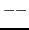

Here are two quickies which introduce some different and exotic looking expressions. First:
7679 schar()
{
return *u.u_dirp++ & 0377);
}
where the declaration
char *u_dirp;
is part of the declaration of the structure ``u''.
``u.u_dirp'' is a character pointer. Therefore the value of ``*u.u_dirp++'' is a character. (Incrementation of the pointer occurs as a side effect.)
When a character is loaded into a sixteen bit register, sign extension may occur. By ``and''ing the word with 0377 any extraneous high order bits are eliminated. Thus the result returned is simply a character.
Note that any integer which begins with a zero (e.g. 0377) is interpreted as an octal integer.
The second example is:
1771 nseg(n)
{
return ((n+127)>>7);
}
The value returned is n divided by 128 and rounded up to the next highest ``integer''.
Note the use of the right shift operator ``'' in preference to the division operator ``/''.